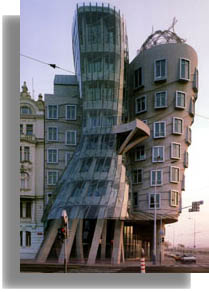

Frank Gehry's building, nicknamed Fred & Ginger (F. Astaire & G. Rogers), seems frozen in an embrace, in the movement of a dance. It confronts the boundaries between graceful motion and rigid structures of steel, glass and concrete. In the center of Prague's historic district, it explores the interactions between different functional and chronological worlds.

Nationale-Nederlanden Building, Prague, Czech Republic |
|
While modernism tended to focus on epistemology, postmodernism emphasizes ontology. |
| Epistemology |
Ontology |
- How to interpret the world?
- Our place in the world?
- What is there to know?
- Who knows it?
- How do they know?
- How sure are they?
- How is knowledge transmitted?
- What are the limits of the knowable?
|
- Which world is this?
- What is to be done in it?
- Which of my selves is to do it?
- What is a world?
- What kinds of worlds are there?
- How are they constituted?
- How do they differ?
- What happens when worlds are in confrontation?
- What happens when boundaries are violated?
- Text versus world?
|
McHale, Brian Postmodernist Fiction. New York: Routledge. 1987. pp 9-10.
Powell, James Postmodernism for Beginners. New York: Writers and Readers Publishing. 1998.
|